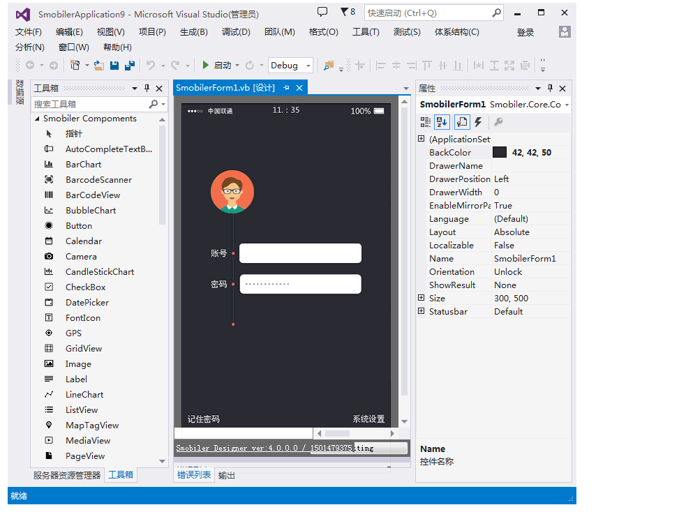

在ios平台,包名有它专有的名词:bundle ID.bundle ID可以翻译成包ID,也可以叫APP ID或者应用ID,他是每一个ios应用的全球唯一标识,只要bundle id不变,无论代码怎么改,图标和应用名称怎么换,ios系统就认为这是同一个应用.每次开发一个新应用,首先都需要到Certificates, Identifiers & Profiles->identifiers->APP IDs去创建一个新的bundle id.但是bundle id分为两种:
1. Explicit App ID（明确的APP ID），一般格式是：com.smobiler.app。这种id只能用在一个app上。每一个新应用都要创建一个,云平台需要的就是此类型的包名.
2. Wildcard App ID(通配符APP ID), 一般格式是：com.smobiler.*。这种id可以用在多个应用上，虽然方便，但是使用这种id的应用不能使用通知等功能,不适用于云平台.
在android平台, 包名称为applicationId,每个Android应用程序都有唯一一个类似Java包名的Application ID，比如com.smobielr. app。在Android设备和各大应用商店上，Application ID是您应用的唯一标识。如果您想上传应用程序的新版本，那么Application ID必须和原来相同。如果您改变了新版本应用程序的Application ID，那么Goolge应用商店会认为这是个完全不同的应用程序.
尽管应用 ID 看起来像传统的 Java 软件包名称，但应用 ID 的命名规则有更多限制：
参考链接:https://developer.android.com/studio/build/application-id.html#change_the_package_name
在云平台设置包名时,需按照ios和android标准,错误的格式和内容会导致打包失败或者无法在两个平台使用,请参考本文内容合理设置包名.
如果应用需要在ios平台使用,请在设置包名前先在ios开发平台创建bundle ID,以防止ID已被注册.
-----------------END-----------------
Smobiler是一款基于.NET的移动应用开发平台
只需要Visual Studio中进行一次开发
同时支持Android、iOS两大操作系统
